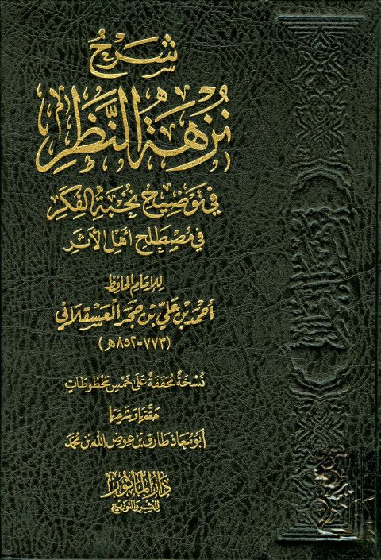

Downloads need an internet connection.
شرح نزهة النظر في توضيح نخبة الفكر في مصطلح أهل الأثر- ت. طارق عوض
Authors: أحمد بن علي بن حجر العسقلاني
Editors: طارق عوض الله أبو معاذ
Publishers: دار المأثور
**▫️ العنوان: شرح نزهة النظر في توضيح نخبة الفكر في مصطلح أهل الأثر- ت. طارق عوض** ▪️ المؤلف: #أحمد_بن_علي_بن_حجر_العسقلاني ▫️ المحقق: #طارق_عوض_الله_أبو_معاذ ▪️ الناشر: #دار_المأثور ▫️ تاريخ النشر: 1432هـ 2011م ▪️ بلد النشر: الرياض، #السعودية ▫️ الطبعة: 1 ▪️ عدد الأجزاء: 1 ▫️ الصفحات: 192 ▪️ نوع الوعاء: #كتاب ▫️ التصنيف الرئيسي: #الحديث_وعلومه ▪️ التصنيف الفرعي: #مصطلح_الحديث ۪